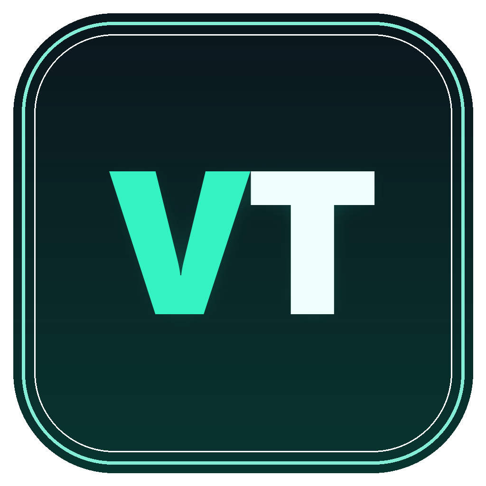
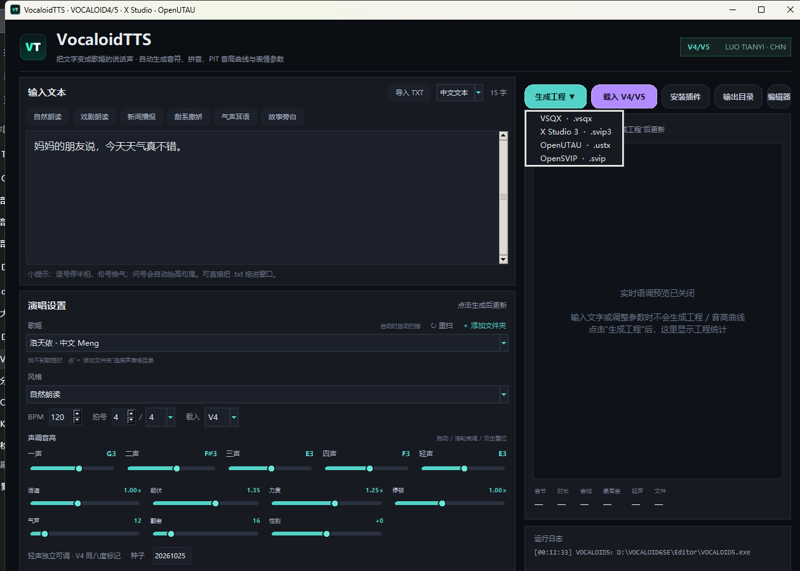

01 / TEXT
中文 / 拼音，直入
中文自动分词、多音字、儿化与轻声；拼音模式直接写 ni3 hao3，跳过汉字判断。还可以把 .txt 拖进窗口导入歌词。

VocaloidTTS 1.1VocaloidTTS 把中文 / 拼音文本变成歌姬的“说话声”。自动生成音符、五声基准、 PIT 音高曲线与表情参数，可输出 VSQX / X Studio / OpenUTAU / OpenSVIP，在对应软件中打开即可继续微调。
不是简单的“TTS”。VocaloidTTS 把中文发音、五声基准、PIT 曲线、节拍与 VOCALOID 工程格式串成了一条完整流水线。
中文自动分词、多音字、儿化与轻声；拼音模式直接写 ni3 hao3，跳过汉字判断。还可以把 .txt 拖进窗口导入歌词。
一声到四声和轻声各有自己的基准，怎么方便怎么调。
约 5ms 控制点 + 40ms 平滑。保留 1.10 的时长与连贯语流，同时让 V4/V5 里的曲线更细、更顺。
默认 120 / 4/4，可改 90/3/4、140/6/8 等。Part 起点按拍号自动对齐到第 5 小节，VSQX 结构不跑偏。
V4/V5 用 VSQX；X Studio 3 用 .svip3；OpenUTAU 用 .ustx；还可导出 OpenSVIP .svip。音高、动态、气声、性别尽量映射。
本地 Tkinter 桌面工具，离线运行。自动扫描/手动添加声库，关闭后驻留托盘。
Vocaloid TTS 会扫描电脑上已有的声库，可选择调用对应的歌姬。
没有云端账号，没有中间格式。填文本、调声调、选格式，剩下的交给目标软件。

V4/V5 用 .vsqx；X Studio 3 用 .svip3；OpenUTAU 用 .ustx；OpenSVIP 用 .svip。
40–240 BPM，2/4 到 16/16；Part 自动落在第 5 小节。
UTF-8 / UTF-16 / GB18030 自动识别，导入不触发渲染。
右键托盘图标再选择“退出 VocaloidTTS”。
每次启动扫描注册表、VoiceDB 和固定磁盘；非常规目录点“＋ 添加文件夹”，下次继续扫描。
不是把每个字压成同一个音高，而是让每个音节带着自己的声调方向。生成后，在 V4/V5 里按空格试听。
把文字变成歌姬的说话声。
Windows 桌面工具 · VSQX · X Studio 3 · OpenUTAU · OpenSVIP